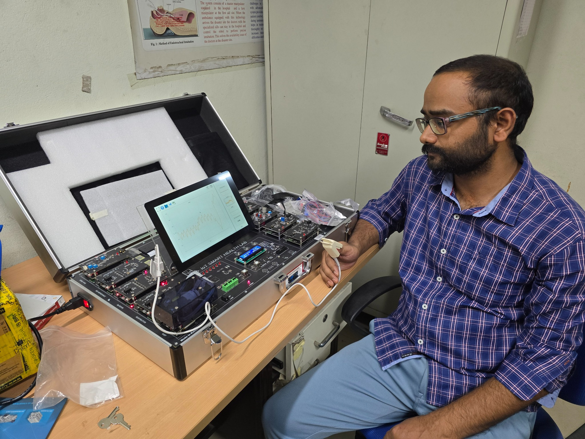
Smart Health IoT & electronics
Measurement and acquisition of ECG, EOG, PCG, body temperature (BT), SpO₂, NIBP, bio-impedance, EEG, EMG, HHI and respiration-rate signals.
SensorsCircuitsEmbedded systems
Ph.D. Research Scholar in Mechatronics and Robotics Engineering at IIEST Shibpur. Research focuses on biomedical engineering, particularly artificial pneumatic lung simulation and the modelling, estimation and control of therapeutic Adaptive Servo-Ventilation (ASV) systems.
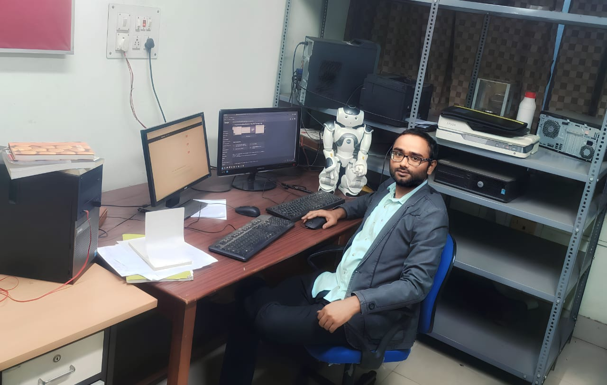
Mechatronics and Robotics Engineering research applied to biomedical systems, with a focus on respiratory simulation, ventilator design, modelling, estimation and control.
Anshuman Vikram is a Ph.D. Research Scholar in Mechatronics and Robotics Engineering at the Indian Institute of Engineering Science and Technology (IIEST), Shibpur. His research focuses on biomedical engineering, particularly respiratory engineering and the design of respiratory-support systems.
He holds an M.Tech in Mechatronics and Robotics Engineering from IIEST Shibpur and a B.Tech in Electronics and Communication Engineering. His broader interests include robotics, intelligent systems, instrumentation, multidisciplinary system integration and control engineering.
His interests span the design, integration and analysis of engineering systems, including electronic instrumentation, mechanical assemblies, electrical drives, pneumatic and hydraulic systems, robotics, embedded platforms and intelligent control.
His current doctoral research, titled “Modeling, Estimation and Control System Design for Adaptive Servo Ventilation System”, brings together the development of an artificial pneumatic lung simulator and the design of a therapeutic Adaptive Servo-Ventilation (ASV) system. The work covers system design, mathematical and physiological modelling, respiratory parameter estimation, and ventilator control.
Photographs from laboratory work with robotics, biomedical instrumentation, PLC-based automation, CNC machining, sensors and fluid-power systems.

Measurement and acquisition of ECG, EOG, PCG, body temperature (BT), SpO₂, NIBP, bio-impedance, EEG, EMG, HHI and respiration-rate signals.
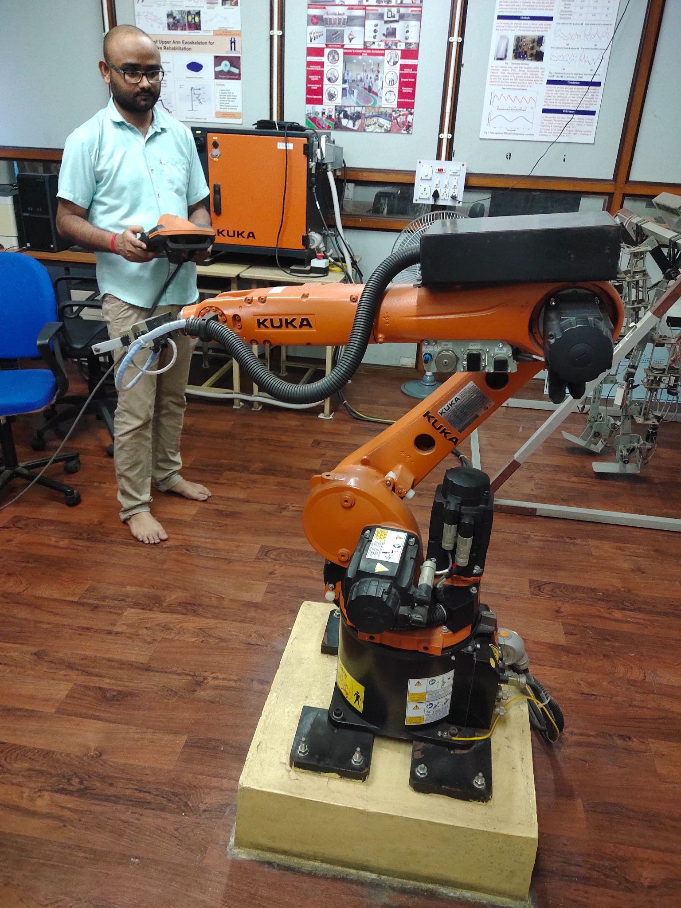
Mechanical assemblies, mechanisms, motion transmission and actuator-based systems.
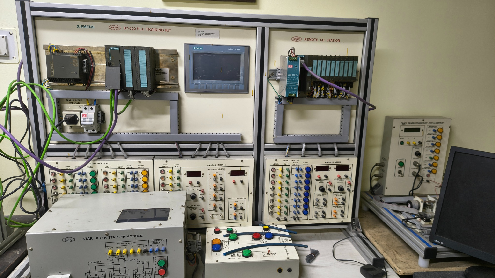
Electric motors, motor drives, electrical control and electromechanical integration.
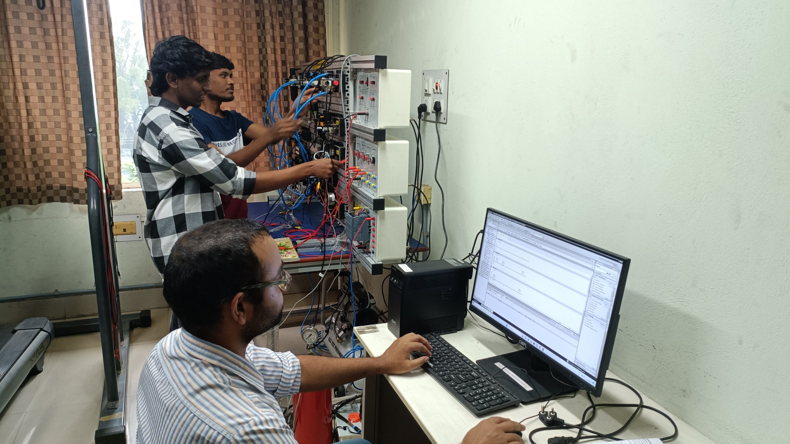
Compressed-air circuits, pneumatic cylinders, directional valves and pressure regulation.
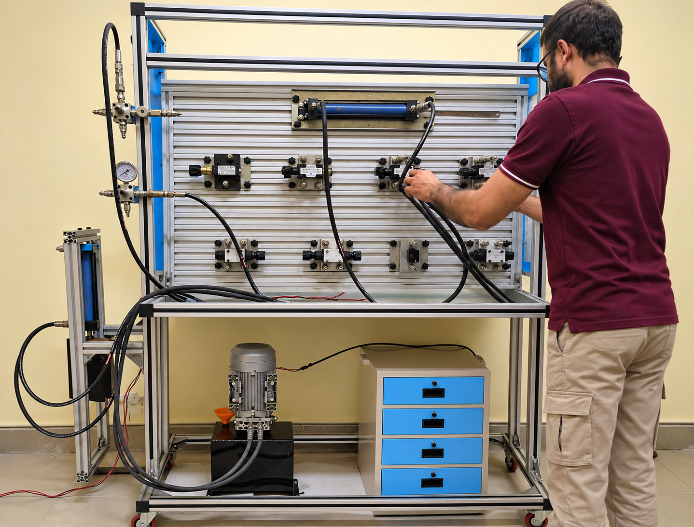
Hands-on exposure to hydraulic training equipment, fluid-power circuits, hoses, valves, actuators and power units.
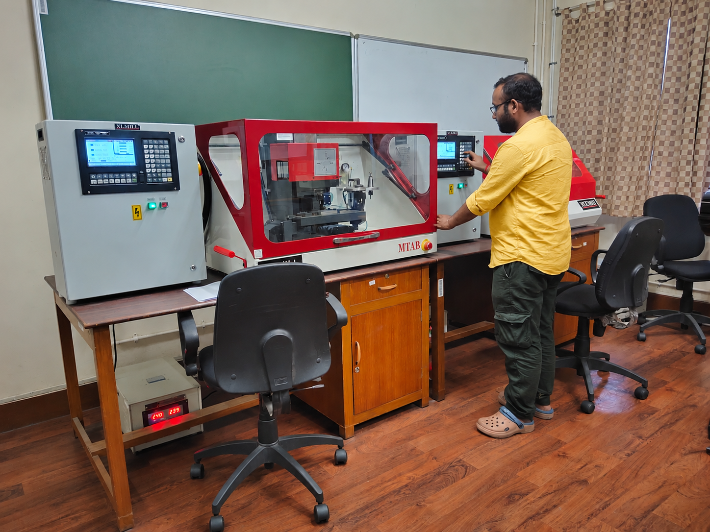
Practical exposure to CNC machine operation and computer-controlled manufacturing equipment.
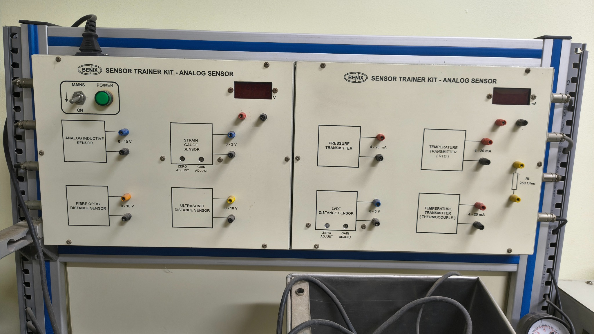
Hands-on exposure to analog sensor trainers, including distance, displacement, pressure and temperature measurement interfaces.
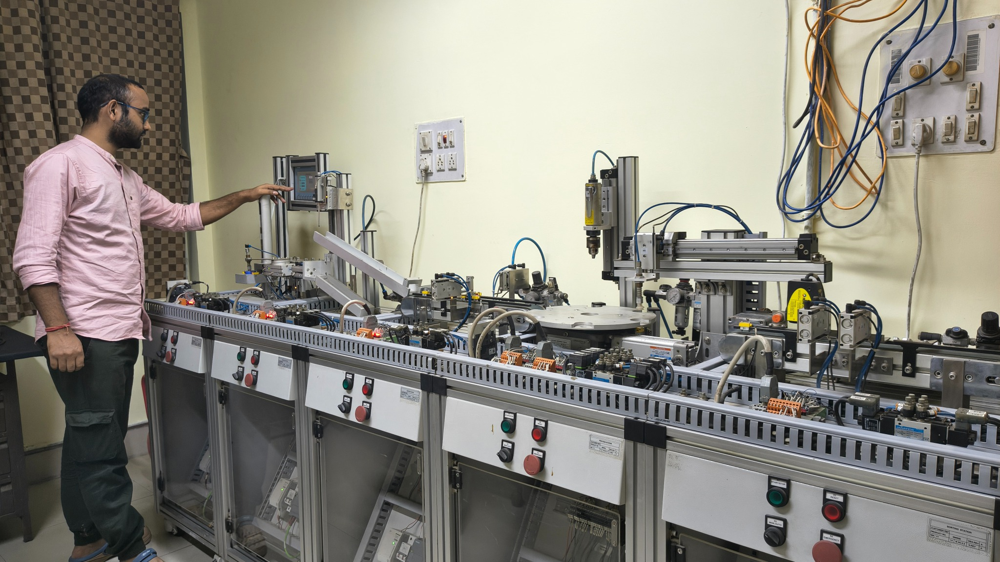
Combining mechanical, electrical, electronic and fluid-power subsystems for automated operation.
Current doctoral research in respiratory engineering, spanning artificial lung simulation, therapeutic ASV system design, parameter estimation and control.
Design and development of a pneumatic lung simulator to emulate respiratory mechanics and support experimental testing of respiratory-support systems.
Physics-informed learning methods for estimating respiratory parameters while accounting for signal excitation and identifiability.
Development and evaluation of methods for estimating respiratory resistance and elastance, and designing control strategies for respiratory-support systems.
Design of a therapeutic ASV system, addressing system architecture, mathematical modelling, parameter estimation and control-system development.
Predicting breath-detection failures in low-cost respiratory flow sensing using signal-quality indicators and risk–coverage evaluation.
Thesis project involving camera-based site recognition, ROS, Gazebo, object detection and neuroevolution methods.
DC motor speed and direction control using Arduino, PWM generation, LabVIEW and an L293D motor driver.
Doctoral thesis: “Modeling, Estimation and Control System Design for Adaptive Servo Ventilation System”. Research includes artificial pneumatic lung simulator development and therapeutic ASV system design, with emphasis on modelling, respiratory parameter estimation and control.
Camera-based site recognition using ROS, QGroundControl, Gazebo, YOLO-based object detection and NEAT.
PWM generation using Arduino UNO and LabVIEW, with an L293D motor-driver IC.
Automatic visitor counter, traffic-light controller and embedded-system-based line-follower robot.
Physics and Electronics teaching experience at ICL Group of Colleges, Haryana.
Indian Institute of Engineering Science and Technology (IIEST), Shibpur
Current CGPA: 8.69
Indian Institute of Engineering Science and Technology (IIEST), Shibpur
CGPA: 9.01
ICL Institute of Engineering & Technology, affiliated with Kurukshetra University
A selection of tools and technical areas from academic, project and research work.
Selected photographs from laboratory activities and equipment exposure, including biomedical signal acquisition, robotic manipulators, CNC machining, hydraulic training equipment, PLC trainers and industrial automation models.
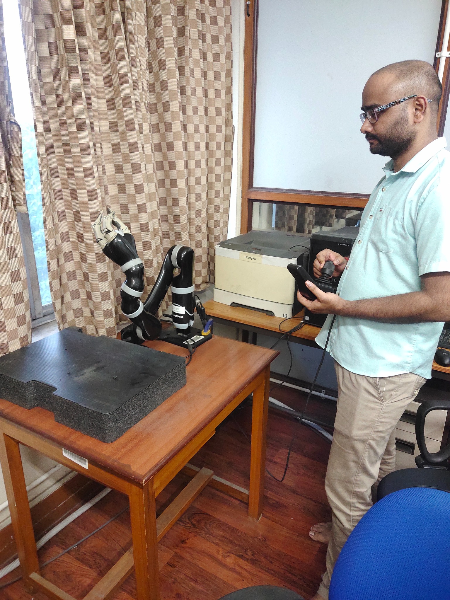
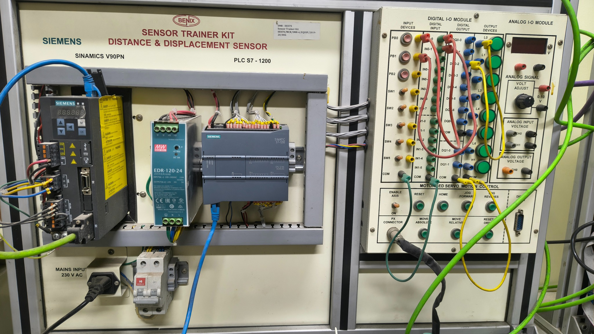
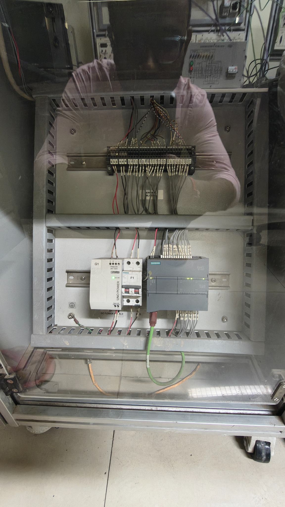
For academic discussions, research collaboration and engineering projects.